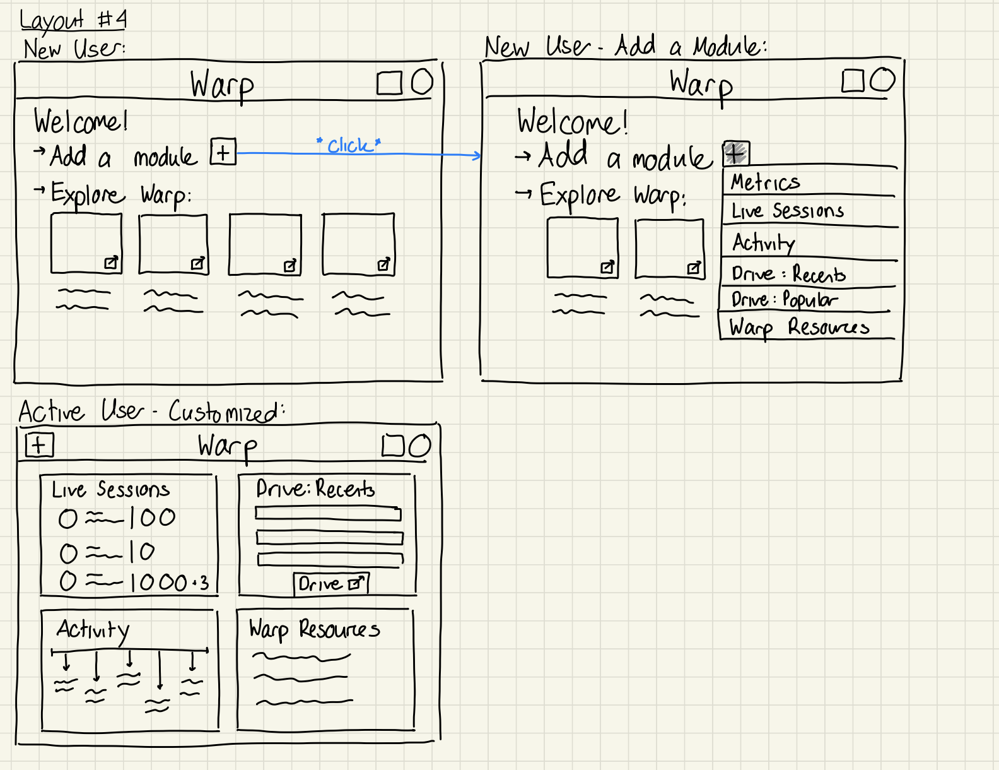
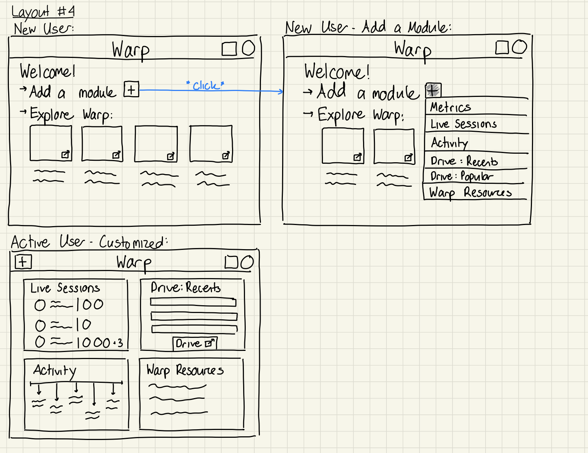
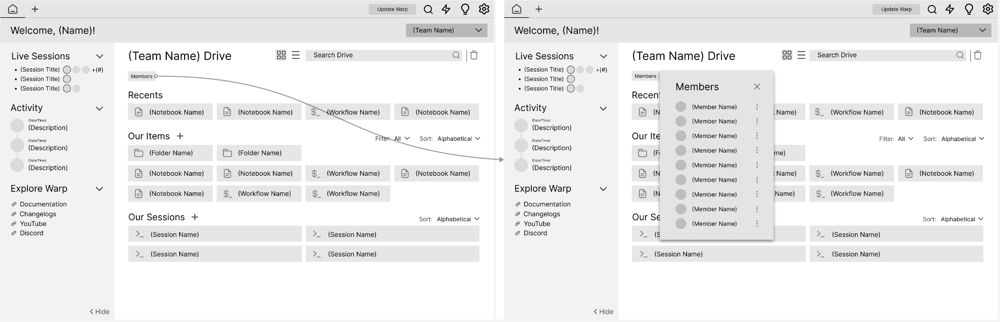
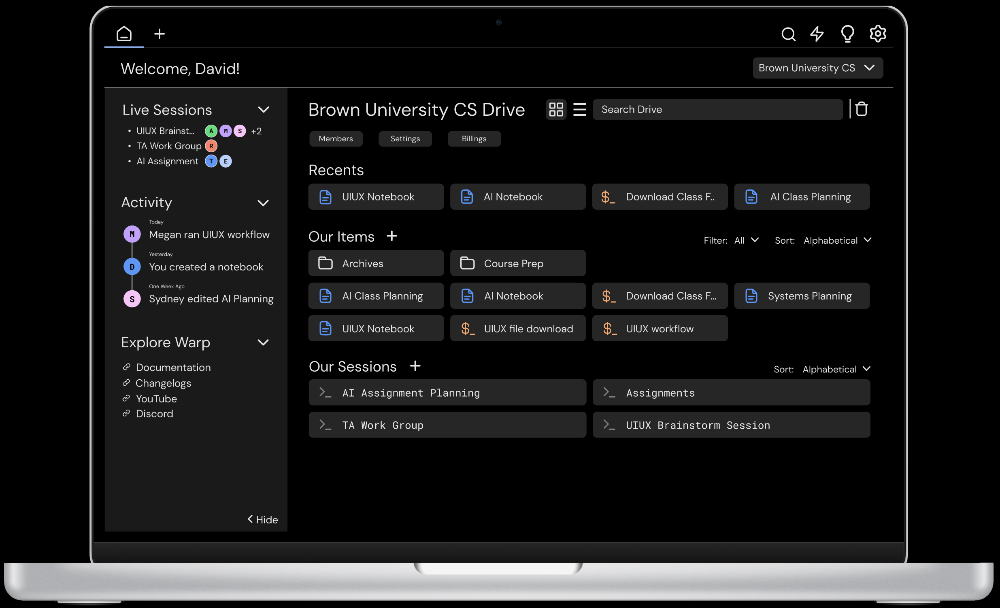

Role
UI/UX Designer
Team
Megan Ball, Rachel Brooks, Alex Hogue and Sydney Meza
Timeline
April 2024
Skills
Figma
Overview
I worked with a team to design a home page for the start-up Warp based on their project brief. Warp is a customizable terminal with collaborative tools and AI integration. This was an amazing opportunity to learn about designing with a team and complete the iterative design process (sketches, low fidelity wireframe, and high fidelity prototypes). We also received feedback on our wireframe from both students in our class and David, a Senior Product Designer at Warp, in order to improve our design.
Demo of Warp
Problem
To summarize the project brief, Warp does not have a centralized home page for users to view information about their files, team, usage, account and learn more about Warp. Currently, a lot of this information is in the settings page, which makes it difficult to find. The home page that we design will serve as an aggregator that ultimately allows for increased discovery and usage of Warp’s features.
Sketches
Each group member created sketches to explore various layouts for the modules and what they would look like in different user states. I focused on designing for both new users (requiring more instructional guidance) and active users (with their current content readily accessible).

 

Low Fidelity Wireframes
First Iteration
Our main goal with the home page was to create a user-friendly, glanceable interface that allows users to understand their current state and easily access their content. We achieved this through a split layout: the left sidebar displays metrics, live sessions, activities, and resources, while the main section shows folders, files, and sessions. Additionally, since Warp is designed for collaboration, it was important for users to seamlessly switch between personal and team views, which organizes their content while still keeping team information accessible.
Drawing inspiration from Figma Home, Google Drive and GitHub home, we opted to merge the current drive on Warp into our new home page. This approach enhances how intuitive the app is to use and reduces time spent searching for desired content.
Personal Home Page: New User

Personal Home Page: Active User

Left Side Bar Hidden: Active User
Team Home Page: Active User

Feedback
To improve our design, we gathered feedback from our class and our contact at Warp. Here is some of the feedback:
-
If user is on multiple teams, toggle may not be best design choice
-
Unclear how to get from current view to terminal (and vice versa)
-
Unclear where black arrow on top left of screen goes
-
People typically do not interact with a horizontal scroll
-
People may want more control over how they see items in drive (EX: list vs gallery mode, filters and sorting)
Second Iteration
Using the feedback that we recieved, we revised our low fidelity wireframes. We removed the metrics module from the left sidebar since it did not feel necessary for users to constantly see this information. Moreover, we added sorting, filters, two modes for viewing, trash and search to the drive. We also removed the horizontal scroll for viewing recent items. Additionally, we changed the toggle between personal and team to a drop-down since David clarified that in the future Warp would allow users to be on multiple teams. Finally, we wanted to make it easy to navigate between the home page and terminal. We opted to use the same top bar as the Warp app, but added a new tab for the home page.
Personal Home Page: New User

Personal Home Page: Active User

Team Home Page: Active User (Member)
Team Home Page: Active User (Admin)

Style Guide
Developers are often online for long periods of time, so having a website that is minimalistic, professional, and easy to read is important. When creating our style guide, we kept in mind these goals. We adapted the style guide provided by Warp, selecting required font sizes, icons and colors.


High Fidelity Prototype
Combining the low fidelity wireframe with the style guide brought our design to life in the interactive high fidelity prototype!
We emphasized key design principles in our final prototype to fulfill our users' needs. First, our design aligns users' mental model of a home page by providing access to all app features directly from the home page. Secondly, we used hierarchical design and the F scan pattern to create a layout that allows users to quickly find what they want. There is the welcome and navigational information across the top, key information on the left sidebar and access to files in the center. Regarding hierarchy, each section has a larger heading and smaller body text so users can easily find the main sections.
Our project focuses on depicting the design of the home page based on the user state and the various actions that they can take. Here is an active user navigating through their personal home page to one of their team home pages:
Personal Home Page: New User

Team Home Page: Active User (Admin)
Presentation
I created a five minute Loom demo video discussing the changes that we made throughout the design process and our high fidelity prototype, which we shared with our Warp contact ahead of our final meeting. The meeting was an opportunity to present our work, answer questions and recieve further feedback.
Reflections
With this project, I learned a lot about designing as a team and interacting with real clients in order to achieve a design goal. Overall, communication was a huge part of this process – both communication within my team and with the startup contact. From the very beginning, we prioritized understanding the needs and expectations of our client, and this involved active listening during meetings, thoughtful questions, and thorough documentation of their feedback and concerns.

The design team